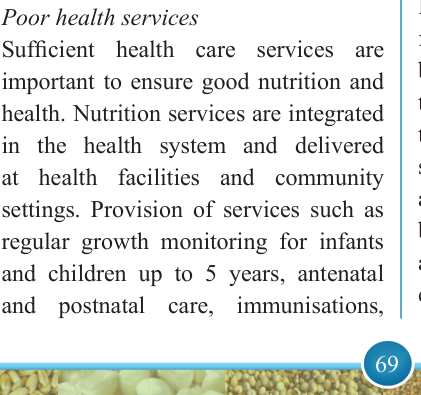

69


Food and Human Nutrition

Form Two
Inadequate access to safe water, poor sanitation and hygiene practices
Water is vital for life. A lack of clean and safe water as well as poor sanitation and hygiene practices increase the vulnerability to infectious diseases such as diarrhoea, typhoid, cholera and malaria. Prolonged infectious diseases may lead to inadequate nutrient intake in the body due to loss of appetite, loss of nutrients through vomiting and diarrhoea and impaired nutrients absorption leading to acute malnutrition.
Environmental sanitation is essential for the health of a community. Access to a clean toilet and environment reduces the risk of infectious diseases. Adequate hygienic practices such as washing hands after using the toilet, before and after eating, before preparing food, after handling garbage, after cleaning a child or changing diapers and before and after caring for someone with vomiting or diarrhoea are important to minimize the risk of infection which may lead to diseases and thereafter malnutrition.
Poor health services
Sufficient health care services are important to ensure good nutrition and health. Nutrition services are integrated in the health system and delivered at health facilities and community settings. Provision of services such as regular growth monitoring for infants and children up to 5 years, antenatal and postnatal care, immunisations,
micronutrient supplementation, deworming, oral rehydration therapy, family planning, nutrition education, and counselling is important to ensure good nutrition and health. However, the delivery of quality services is often hindered by challenges such as insufficient and poorly distributed medical and nutrition supplies, limited number
of
health
personnel
and
poor service delivery. Besides, long distances to health facilities, high costs of medicine, lack of health insurance and poor health seeking behaviour hinder individuals from utilising health services.
Large family size
There is a relationship between family size and family member’s nutritional status. Large family size is regarded as a risk factor for malnutrition particularly for infants and young children. Large family size puts an extra burden on food
consumption and the family is more likely
to experience food shortage compared to households with a small family size.
If family income is low compared to
family size, there is a risk of malnutrition
because it can affect the kinds of meals to be served; the family fails to meet the nutritional needs. In low income situation, staples such as maize, rice and millet are bought in larger amounts, but the amount of vegetables, fruits and animal-based foods like fish, milk and eggs may decrease. Thus, the quality
17/09/2025 16:30